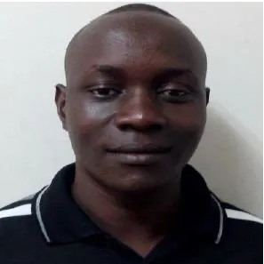

Dr. Meshack Hawi holds BSc and MSc degree in Mechanical Engineering,
both from Jomo Kenyatta University of Agriculture and Technology (JKUAT)
- Kenya, received in 2012 and 2015, respectively, and PhD in
Energy Resources Engineering from Egypt-Japan University of Science
and Technology (E-JUST), Egypt (2019).
He was a visiting researcher
in the Department of Systems and Control Engineering, Tokyo Institute
of Technology, Japan, in 2018 and 2022 to 2023 for his PhD and
Postdoctoral research, respectively.
He is currently a Lecturer at the
Department of Mechanical Engineering, JKUAT. His research interest is in
Combustion Systems, Internal Combustion Engines (ICEs), Renewable Energy
and Computational Fluid Dynamics (CFD).
Contact:
Email: mhawi@jkuat.ac.ke
Dr. Bernerd Owiti (PhD)

Bernard Owiti (PhD) holds a BSc (2012) and MSc (2015) degrees in Mechanical Engineering from Jomo Kenyatta
University of Agriculture and Technology (JKUAT) – Kenya, and a PhD in Mechanical and Aerospace Engineering
from Tottori University, Japan (2020).
He also did his Postdoctoral research in Tottori university between 2023 and
2024 and studied CFD modelling of pump fluid flow as well as wind tunnel flow experiments.
Currently, he is a
Lecturer in the Department of Mechanical Engineering, JKUAT.
Contact:
Email: bowiti@jkuat.ac.ke
Dr. Patrick I Muiruri (PhD)
Dr. Patrick Irungu Muiruri is a lecturer at the Mechanical Engineering
Department, in Jomo Kenyatta University of Agriculture and Technology (JKUAT).
He holds a doctorate degree in Engineering from the University of Botswana
in 2019. He graduated with a BSc and MSc in Aircraft Design Engineering
from National Research University formally known as Samara State Aerospace
University in Russia in 2009.
Dr. Patrick is a scholar and mentor in Engineering, and a registered
graduate engineer by Engineers Board of Kenya (EBK).
His areas of research interest are Aeronautics, Aerodynamics,
Design of Aircraft, Aerodynamics, Wind Energy, Mechanical and Systems
Design, FEM & CFD Simulations.
Contact:
Office: ELB 004
Email: pmuiruri@jkuat.ac.ke
Dr. Solomon Wekesa
Dr. Solomon Wekesa Wakolo holds BSc and MSc degree in Mechanical Engineering, both from
Jomo Kenyatta University of Agriculture and Technology (JKUAT) - Kenya, received in 2014
and 2019, respectively, and PhD in Energy Materials science (Specializing in fuel cells)
University of Yamanashi, Japan (2024).
He is a registered graduate Engineer by both EBK and
IEK. He is currently a Lecturer at the Department of Mechanical Engineering, JKUAT.
His
research interest is in Hydrogen fuel cells, Electrolyzers, Piezoelectric materials, Solar energy,
spectroscopy and automation
Contact:
Email: solomonwekesa@jkuat.ac.ke
Publications
Muchiri, A. K., B. Oindi, and C. Soi. "Development of a Variable Test Section Low Speed Wind Tunnel."
Proceedings of the Sustainable Research and Innovation Conference. 2022. Link
Muiruri, Patrick Irungu, Oboetswe Seraga Motsamai, and Rehema Ndeda. "A comparative study of RANS-based turbulence models for an upscale wind turbine blade." SN Applied Sciences 1.3 (2019): 237
link
Muiruri, Patrick Irungu, and Oboetswe Seraga Motsamai. "Three dimensional cfd simulations of a wind turbine blade section; validation." J. Eng. Sci. Technol. Rev 11.1 (2018): 138-145.
Link
Muiruri, Patrick Irungu, and Oboetswe Seraga Motsamai. "Computational Effects of Winglet Tilted Within Range of-45° and+ 45° on the Up-Scale Wind Turbine Blade Using CFD." Mathematical Modelling of Engineering Problems 7.1 (2020).
Link
Motsamai, O. S., and P. I. Muiruri. "Three-dimensional effects of trailing edge flap and winglet integrated on up-scale wind turbine blade." IOP Conference Series: Earth and Environmental Science. Vol. 354. No. 1. IOP Publishing, 2019.
Link
Simiyu, Laura W., et al. "Optimization of polygonal cross-sectioned conformal cooling channels in injection molding." International Journal on Interactive Design and Manufacturing (IJIDeM) 18.3 (2024): 1593-1609.
Link
Simiyu, Laura W., et al. "Geometrical Parameter Optimization of Circular Cross-Section Conformal Cooling Channels in Injection Molds of Plastic Paving Block Molds." International Journal of Engineering Research in Africa 70 (2024): 37-51.
Link